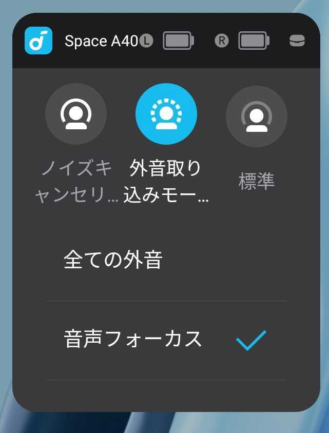

Anker Soundcore Space A40を買いました。
https://www.ankerjapan.com/products/a3936
前から使ってみたかったところに、Amazonのセールで￥12,990 -> ￥8,990と安くなってたので、購入を決意。
対抗馬は横向きで寝ててても使いやすいっぽい Anker Soundcore Sleep A20 でした。ただ、Sleep A20はセールしていなかったのと、私が寝るときはだいたい寝る時は仰向けスタートなので、Space A40でよかろうと判断。
ノイキャン搭載イヤホンは初めてですが、快適ですね。外音取り込みモードでは音声フォーカスも可能なのもとてもいい。モードの切り替え方法は3パターン。

タッチによるモード変更は自由度が低いので、人と話したい時にさっと「外音取り込み」モードにするためのものと割り切るのがよさそう。ウィジェットを使って「音声フォーカス」を基本としつつ、外出や料理などピンポイントで「全ての外音」を対象にすれば、そこまで操作も煩わしくならないと予想してます。
タッチ操作も設定可能で、私は以下のとおり割り当ててます。デフォとは大分離れてますね。
| L | R | |
|---|---|---|
| 1回タップ | 音量ダウン | 音量アップ |
| 2回タップ | モード設定 | 再生/一時停止 |
| 2秒間長押し | 次へ | 音声アシスタント |
1回タップを音量調整にしているのは、誤操作で音量が変わってもまあいっかと思えるため。 2回タップは欲しい時に確実に操作したい内容を入れてます。 2秒間長押しは、押さなすぎ・押しすぎでうまく反応しなくてもまあいっかと思える内容に。「次へ」を使うのに「前へ」がないですが、音声アシスタントやスマートバンドでも操作できる範囲なのでいいかなと。
他によかった点は以下。
総じて満足してます。
ENJOY!